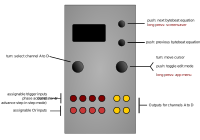

Viznutcracker, sweet!

Controls
| Control | Function |
|---|---|
| Left encoder (turn) | Select channel A to D to edit (all channels always active) |
| Right encoder (turn) | Navigation mode: move up and down through the menu items. Edit mode: increase or decrease the value being edited. |
| Right encoder (press) | Toggle between menu navigation (selection) mode and value editing mode |
| Right encoder (long press) | App selection menu |
| Up button (long press) | invoke screensaver |
| Up button | Next bytebeat equation |
| Down button | Previous bytebeat equation |
Available settings (per-channel)
| Setting | Meaning |
|---|---|
Equation |
Byte beat equation (see table below) |
Speed |
0 to 255. 255 equates to a 16.7 kHz sample rate (i.e. the phase accumulator advances 16,666 times per second). There is a rough quadratic scaling of lower rates, meaning that 0 is quite slow. |
Pitch |
1 to 255. This is a very rough pitch setting, which behaves differently with each equation. Increasing values of Pitch will increase the pitch (frequency) of some elements of the equation output, but not necessarily all components, so it may not sound like a normal pitch increase or decrease. However, its effect does sound different to the Speed parameter. (shrugs shoulders) |
Parameter 0 |
The first adjustable parameter in the chosen equation. Range 0 to 255, but some parameter settings in some equations do not produce any output, or do not produce output for all values of the phase accumulator (be patient!) |
Parameter 1 |
ditto for the second adjustable parameter in the equation |
Parameter 2 |
ditto for the third adjustable parameter in the equation |
Loop mode |
Enables loop mode, in which the phase accumulator is constrained to loop between specific start and end values, instead of between 0 and 4,294,967,296. |
Loop begin ++ |
Coarse loop begin point, range 0-255 |
Loop begin + |
Medium loop begin point, range 0-255 |
Loop begin |
Fine loop begin point, range 0 - 255 |
Loop end ++ |
Coarse loop end point, range 0-255 |
Loop end + |
Medium loop end point, range 0-255 |
Loop end |
Fine loop end point, range 0 - 255 |
Trigger input |
Specified which of the 4 trigger inputs (TR1 to TR4) is used for the trigger input for Step mode, or when Step Mode is off, which trigger input is used to reset the phase accumulator for that channel. |
Step mode |
When set to on, the phase accumulator is incremented when a trigger or clock pulse is received on the digital (trigger) input specified by the Trigger input setting. When set to off, a trigger (or rising edge of a pulse or clock) received on the trigger input specified by the Trigger Input setting will reset the phase accumulator (the t variable in byte beat equations), which has the effect of resetting the byte beats “tune” or “melody” back to its beginning, or back to the start of the loop start point if loop mode is enabled. |
CV1 -> |
specifies which parameter CV1 is mapped to for this channel. Choices are off, eqn, spd, p0, p1, p2, beg++, beg, end++, end and pitch. |
CV2 -> |
ditto for CV2 |
CV3 -> |
ditto for CV3 |
CV4 -> |
ditto for CV4 |
| Equation name | Source of equation |
|---|---|
hope |
“atmospheric, hopeful” via royal paw |
love |
the equation by stephth via here at 3:38 |
life |
the second equation listed here |
age |
“Arp rotator” via Microbe Modular Equation Composer Ptah bank |
clysm |
“BitWiz Transplant” via Microbe Modular Equation Composer Ptah bank |
monk |
“Vocaliser” via Microbe Modular Equation Composer Khepri bank |
NERV |
“Chewie” via Microbe Modular Equation Composer Khepri bank |
Trurl |
“Tinbot” via Microbe Modular Equation Composer Sobek bank |
Pirx |
“My Loud Friend” via Microbe Modular Equation Composer Ptah bank |
Snaut |
"”A bit high-frequency, but keeper anyhow” via Microbe Modular Equation Composer Khepri bank |
Hari |
“The Signs” via Microbe Modular Equation Composer Ptah bank |
Kris |
“Light Reactor” via Microbe Modular Equation Composer Ptah bank |
Tichy |
“Alpha” via Microbe Modular Equation Composer Khepri bank |
Bregg |
“Hooks” via Microbe Modular Equation Composer Khepri bank |
Avon |
“Widerange” via Microbe Modular Equation Composer Khepri bank |
Orac |
“Abducted” via Microbe Modular Equation Composer Ptah bank |
Inputs and outputs
Trigger inputs and CV1 to CV4 are mappable per-channel via the menu. Outputs for channels A to D appear on outputs A to D respectively.
Summary
This is a experimental implementation of several bytebeats signal generators. “bytebeats” are equations (actually, recursive functions), expressed usually as a single line of programme code, typically involving various bit-level operators, which when evaluated with an incrementing phase value at audio rates produce all manner of harsh digital noises, some of which sound musical, or at least, interesting. bytebeats were first described in 2011 by viznut (aka Ville-Matias Heikkilä).
The output, if used as an audio signal, usually needs to be fairly heavily filtered through a low-pass filter to remove at least some of the unpleasant digital “screech” due to high-frequency aliasing and other effects which are characteristics of bytebeats. This digital aliasing is a fundamental characteristic of the way bytebeats work, and isn’t due to any hardware limitations of the o_C module.
The Viznutcracker, sweet! app current provides access to 16 different byte beat equations. The app provides four independent byte beat generators, on channels A to D, which all run independently. The equation, speed/frequency and three equation parameter values (p0, p1 and p2) can be set via the menus and/or voltage-controlled for each generator via mappable CV inputs.
Perhaps uniquely amongst byte beat generator modules, the Viznutcracker, sweet! apps permits the byte beat generators to be run at very slow rates, and because the o_C module outputs are DC-coupled, they can therefore be used as sources of stepped control voltages. For example, the outputs can be fed into a quantiser (such as another o_C module) to create potentially interesting pitch sequences (possibly even melodies…). Furthermore, the app allows each byte beat equation to be incremented by an external clock/trigger input, so that these stepped voltages can be generated in synchrony with other external processes.
Tips
-
as noted above, use the byte beat generators at very slow rates to generate DC control voltages. Feed these to a quantiser to produced pitch sequences, or pass them through a portamento or slew-limiting module to create interesting smooth modulation signals, or use them as-is, to modulate filters etc.
-
process the byte beats outputs running at audio rates through a low-pass or shelf filter to remove some of the high-pitched screech
-
process the output through band-pass filters (such as the Mutable Instruments Shelves filter), or other complex filtering arrangements subject to slow modulation (by another o_C module, perhaps)
-
process the output through a VCA and/or filter with a percussive envelope to produce interesting, well, percussive sounds. Use the same trigger or gate signal used to fire the envelopes also reset the phase on the byte beat generator. Use slow modulation to slowly vary the frequency/rate, and/or to “scrub” loop start and end points in order to vary the nature of the percussive sound.